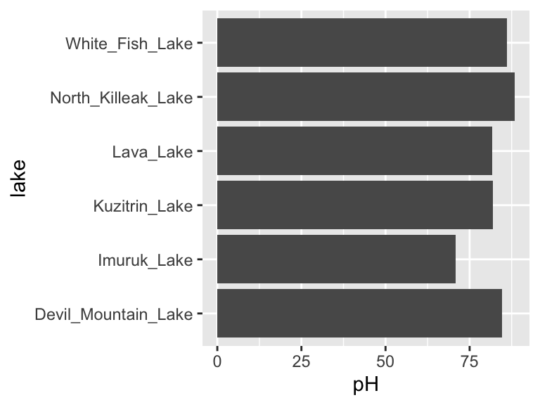
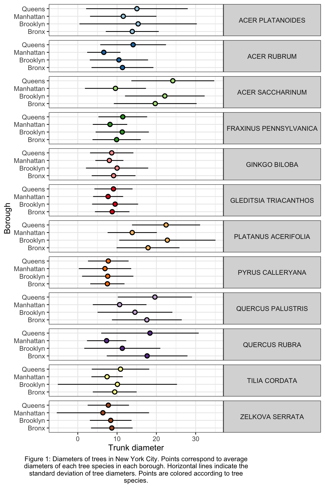

7 the pipe and summaries
7.1 the pipe (%>%)
We have seen how to create new objects using <-, and we have been filtering and plotting data using, for example:
ggplot(filter(alaska_lake_data, park == "BELA"), aes(x = pH, y = lake)) + geom_col()
However, as our analyses get more complex, the code can get long and hard to read. We’re going to use the pipe %>% to help us with this. Check it out:
alaska_lake_data %>%
filter(park == "BELA") %>%
ggplot(aes(x = pH, y = lake)) + geom_col()
Neat! Another way to think about the pipe:

The pipe will become more important as our analyses become more sophisticated, which happens very quickly when we start working with summary statistics, as we shall now see…
7.2 summary statistics
So far, we have been plotting raw data. This is well and good, but it is not always suitable. Often we have scientific questions that cannot be answered by looking at raw data alone, or sometimes there is too much raw data to plot. For this, we need summary statistics - things like averages, standard deviations, and so on. While these metrics can be computed in Excel, programming such can be time consuming, especially for group statistics. Consider the example below, which uses the ny_trees dataset. The NY Trees dataset contains information on nearly half a million trees in New York City (this is after considerable filtering and simplification):
ny_trees
## # A tibble: 378,762 × 14
## tree_height tree_diameter address tree_loc pit_type soil_lvl status spc_latin
## <dbl> <dbl> <chr> <chr> <chr> <chr> <chr> <chr>
## 1 21.1 6 1139 5… Front Sidewal… Level Good PYRUS CA…
## 2 59.0 6 2220 B… Across Sidewal… Level Good PLATANUS…
## 3 92.4 13 2254 B… Across Sidewal… Level Good PLATANUS…
## 4 50.2 15 2332 B… Across Sidewal… Level Good PLATANUS…
## 5 95.0 21 2361 E… Front Sidewal… Level Poor PLATANUS…
## 6 67.5 19 2409 E… Front Continu… Level Good PLATANUS…
## 7 75.3 11 1481 E… Front Lawn Level Excel… PLATANUS…
## 8 27.9 7 1129 5… Front Sidewal… Level Good PYRUS CA…
## 9 111. 26 2076 E… Across Sidewal… Level Excel… PLATANUS…
## 10 83.9 20 2025 E… Front Sidewal… Level Excel… PLATANUS…
## # … with 378,752 more rows, and 6 more variables: spc_common <chr>,
## # trunk_dmg <chr>, zipcode <dbl>, boroname <chr>, latitude <dbl>,
## # longitude <dbl>More than 300,000 observations of 14 variables! That’s 4.2M data points! Now, what is the average and standard deviation of the height and diameter of each tree species within each NY borough? Do those values change for trees that are in parks versus sidewalk pits?? I don’t even know how one would begin to approach such questions using traditional spreadsheets. Here, we will answer these questions with ease using two new commands: group_by() and summarize(). Let’s get to it.
Say that we want to know (and of course, visualize) the mean and standard deviation of the heights of each tree species in NYC. We can see that data in first few columns of the NY trees dataset above, but how to calculate these statistics? In R, mean can be computed with mean() and standard deviation can be calculated with sd(). We will use the function summarize() to calculate summary statistics. So, we can calculate the average and standard deviation of all the trees in the data set as follows:
ny_trees %>%
summarize(mean_height = mean(tree_height))
## # A tibble: 1 × 1
## mean_height
## <dbl>
## 1 72.6
ny_trees %>%
summarize(stdev_height = sd(tree_height))
## # A tibble: 1 × 1
## stdev_height
## <dbl>
## 1 28.7Great! But how to do this for each species? We need to subdivide the data by species, then compute the mean and standard deviation, then recombine the results into a new table. First, we use group_by(). Note that in ny_trees, species are indicated in the column called spc_latin. Once the data is grouped, we can use summarize() to compute statistics.
ny_trees %>%
group_by(spc_latin) %>%
summarize(mean_height = mean(tree_height))
## # A tibble: 12 × 2
## spc_latin mean_height
## <chr> <dbl>
## 1 ACER PLATANOIDES 82.6
## 2 ACER RUBRUM 106.
## 3 ACER SACCHARINUM 65.6
## 4 FRAXINUS PENNSYLVANICA 60.6
## 5 GINKGO BILOBA 90.4
## 6 GLEDITSIA TRIACANTHOS 53.0
## 7 PLATANUS ACERIFOLIA 82.0
## 8 PYRUS CALLERYANA 21.0
## 9 QUERCUS PALUSTRIS 65.5
## 10 QUERCUS RUBRA 111.
## 11 TILIA CORDATA 98.8
## 12 ZELKOVA SERRATA 101.Bam. Mean height of each tree species. summarize() is more powerful though, we can do many summary statistics at once:
ny_trees %>%
group_by(spc_latin) %>%
summarize(
mean_height = mean(tree_height),
stdev_height = sd(tree_height)
) -> ny_trees_by_spc_summ
ny_trees_by_spc_summ
## # A tibble: 12 × 3
## spc_latin mean_height stdev_height
## <chr> <dbl> <dbl>
## 1 ACER PLATANOIDES 82.6 17.6
## 2 ACER RUBRUM 106. 15.7
## 3 ACER SACCHARINUM 65.6 16.6
## 4 FRAXINUS PENNSYLVANICA 60.6 21.3
## 5 GINKGO BILOBA 90.4 24.5
## 6 GLEDITSIA TRIACANTHOS 53.0 13.0
## 7 PLATANUS ACERIFOLIA 82.0 16.0
## 8 PYRUS CALLERYANA 21.0 5.00
## 9 QUERCUS PALUSTRIS 65.5 6.48
## 10 QUERCUS RUBRA 111. 20.7
## 11 TILIA CORDATA 98.8 32.6
## 12 ZELKOVA SERRATA 101. 10.7Now we can use this data in plotting. For this, we will use a new geom, geom_pointrange, which takes x and y aesthetics, as usual, but also requires two additional y-ish aesthetics ymin and ymax (or xmin and xmax if you want them to vary along x). Also, note that in the aesthetic mappings for xmin and xmax, we can use a mathematical expression: mean-stdev and mean+stdev, respectivey. In our case, these are mean_height - stdev_height and mean_height + stdev_height. Let’s see it in action:
ny_trees_by_spc_summ %>%
ggplot() +
geom_pointrange(
aes(
y = spc_latin,
x = mean_height,
xmin = mean_height - stdev_height,
xmax = mean_height + stdev_height
)
)
Cool! Just like that, we’ve found (and visualized) the average and standard deviation of tree heights, by species, in NYC. But it doesn’t stop there. We can use group_by() and summarize() on multiple variables (i.e. more groups). We can do this to examine the properties of each tree species in each NYC borough. Let’s check it out:
ny_trees %>%
group_by(spc_latin, boroname) %>%
summarize(
mean_diam = mean(tree_diameter),
stdev_diam = sd(tree_diameter)
) -> ny_trees_by_spc_boro_summ
## `summarise()` has grouped output by 'spc_latin'. You can override using the `.groups` argument.
ny_trees_by_spc_boro_summ
## # A tibble: 48 × 4
## # Groups: spc_latin [12]
## spc_latin boroname mean_diam stdev_diam
## <chr> <chr> <dbl> <dbl>
## 1 ACER PLATANOIDES Bronx 13.9 6.74
## 2 ACER PLATANOIDES Brooklyn 15.4 14.9
## 3 ACER PLATANOIDES Manhattan 11.6 8.45
## 4 ACER PLATANOIDES Queens 15.1 12.9
## 5 ACER RUBRUM Bronx 11.4 7.88
## 6 ACER RUBRUM Brooklyn 10.5 7.41
## 7 ACER RUBRUM Manhattan 6.63 4.23
## 8 ACER RUBRUM Queens 14.1 8.36
## 9 ACER SACCHARINUM Bronx 19.7 10.5
## 10 ACER SACCHARINUM Brooklyn 22.2 10.1
## # … with 38 more rowsNow we have summary statistics for each tree species within each borough. This is different from the previous plot in that we now have an additional variable (boroname) in our summarized dataset. This additional variable needs to be encoded in our plot. Let’s map boroname to x and facet over tree species, which used to be on x. We’ll also manually modify the theme element strip.text.y to get the species names in a readable position.
ny_trees_by_spc_boro_summ %>%
ggplot() +
geom_pointrange(
aes(
y = boroname,
x = mean_diam,
xmin = mean_diam-stdev_diam,
xmax = mean_diam+stdev_diam
)
) +
facet_grid(spc_latin~.) +
theme(
strip.text.y = element_text(angle = 0)
)
Excellent! And if we really want to go for something pretty:
ny_trees_by_spc_boro_summ %>%
ggplot() +
geom_pointrange(
aes(
y = boroname,
x = mean_diam,
xmin = mean_diam-stdev_diam,
xmax = mean_diam+stdev_diam,
fill = spc_latin
), color = "black", shape = 21
) +
labs(
y = "Borough",
x = "Trunk diameter",
caption = str_wrap("Figure 1: Diameters of trees in New York City. Points correspond to average diameters of each tree species in each borough. Horizontal lines indicate the standard deviation of tree diameters. Points are colored according to tree species.", width = 80)
) +
facet_grid(spc_latin~.) +
guides(fill = "none") +
scale_fill_brewer(palette = "Paired") +
theme_bw() +
theme(
strip.text.y = element_text(angle = 0),
plot.caption = element_text(hjust = 0.5)
)
Now we are getting somewhere. It looks like there are some really big maple trees (Acer) in Queens.